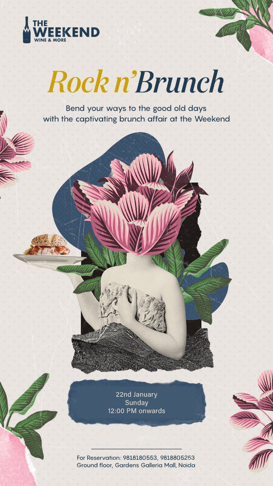

A constellation creator launch for The Weekend Wine & More — a Moroccan-inspired fine-dining and wine destination on the upper deck of Gardens Galleria Mall, Noida. Twenty creator handles activated, seventeen active across four audience verticals, combined reach 2.55M. One venue, one weekend, one cultural arrival.
The Weekend Wine & More opened on the upper deck of Gardens Galleria Mall, Noida — a saturated F&B floor with established competition. The brief to 98 was not "promote a restaurant"; it was "make sure the city's content audiences walk through this venue's door before the algorithm decides what it is".
98 designed the launch as a constellation: twenty creators activated across four distinct audience verticals, each shooting the venue through their own grammar, all sharing a tag-stack and geo-pin discipline. Seventeen handles remain active at the time of this writing — three creators have since rotated handles or closed accounts; their contribution is captured in the contemporaneous archive.
The Weekend Wine & More — fine-dining wine bar at Gardens Galleria Mall, Noida (also operating as @weekendatgallerianoida).
Multi-creator UGC seeding · Reels, four-up Story collages, brand-curated portrait shoot. 2–4 frames per creator visit.
98 Entertainment — constellation launch for The Weekend Wine & More, one venue told through five lenses.
Standardised tag stack (@theweekendwineandmore + @98.entertainment + @harsh.aryaa + Gardens Galleria geo-tag) across every visit.
Gardens Galleria already had an established F&B floor in mid-2022. The Weekend was the new tenant on a deck where every neighbouring window already had foot traffic, regular guests, and an Instagram tag stack of its own. A maximalist Moroccan wine bar opening into that ecosystem could not announce itself with a hoarding or a Zomato listing — both would read as "another opening". It had to enter the city's content stream as a place that was already a story.
Don't sell the menu.
Build a constellation.
A single hero creator post would have been an ad. Three would have been a campaign. We chose twenty, mapped across four audience pools, each picked for the specific audience moment they could capture inside the room. Each creator's content reads as their own; the consistent grammar (the Moroccan setting, the tag stack, the geo-pin) does the work of making them feel like a chorus.
Food creators alone would have made the launch feel like a soft opening. Lifestyle alone would have felt like a vibe-piece. The combination — luxury fashion, design / aesthetic, food, couples — made the launch read as cultural, not commercial.
Tier-1 broadcast (Apoorvaa Mishra, Sonali Arora, Kulvir Malhotra, Mandeep Singh, Anchit & Surabhi) carried discoverability. Mid-tier (Veronica, Sara, Taanya, Mohi, Lakshita, Anchal) carried weekend-bookings intent. Niche-but-deep (Sukriti the architect, Ayush Jain the F&B photographer) carried credibility and asset quality.
Same handle pair on every visit, founder re-share via @harsh.aryaa, geo-tag locked to Gardens Galleria. Twenty creators behaved like one source for the location pin's algorithm.
Twenty creators across four verticals. Five marquee profiles follow on the next pages — each picked because they delivered a distinct value class to the constellation. The remaining fifteen sit in the supporting roster on Page 11.
The shape of the constellation explains the strategy. Reach is layered top to bottom; credibility is layered niche to broadcast. No single creator carries the launch alone — the room does, by being the constant subject across twenty different eyes.
The biggest reach in the constellation. Apoorvaa is an actor and content creator based across Mumbai and Delhi — her audience treats her picks as celebrity recommendations, not paid posts. For The Weekend, she was the broadcast lever: a single repost from her grid behaved like a Times-of-India review for the right demographic.
Two frames in 98's launch highlight: a hero cocktail close-up at the venue's signature column lighting (pink-stemmed glass with red infusion, against the chevron-light bar backdrop), and a follow frame of bamboo steamer dim sums with chutney accompaniments. Tagged @theweekendwineandmore + @98.entertainment.
Pure broadcast at celebrity tier. Apoorvaa's audience overlaps with Mumbai's hospitality circuit — bringing The Weekend cross-city visibility on Day 1 of the launch window. The single highest-reach creator amplification in the campaign.
The luxury anchor of the constellation. Kulvir's bio reads "FASHION · LIFESTYLE · BEAUTY · TRAVEL · LUXURY" — and her grid pre-positions her audience to expect high-end content. For a venue that is, structurally, a luxury wine bar trying to stand apart from a saturated mall F&B floor, she was the verified creator most likely to make her followers read The Weekend as aspirational, not just new.
Full-length portrait against the venue's deep wine-cellar shelving — the most visually-distinctive prop in the room. Multiple looks captured (pink jacket; monochrome black) so the brand could re-share across multiple beats. Caption-led, fashion-first framing.
Luxury positioning. Kulvir's frame let The Weekend inherit her grid's "places that luxury fashion creators visit" association — the strongest possible counter-positioning to the saturated mall-restaurant context.
Sukriti is an architect — design partner at @urbanregenerationproject. We picked her precisely because her audience knows her as an architect, not an influencer. When she tags a venue, she's not endorsing the food — she's endorsing the room. For The Weekend's maximalist Moroccan brief, that is the strongest possible third-party validation: a designer pointing at a designed space.
A composed dining-table frame: tall stemware glass with apricot-coloured drink, plated crepe with sauce-dotted artistry, menu card with QR. The composition reads as still-life, not food shot.
Architectural credibility. 55K followers but the right 55K — design-conscious diners, practising architects, hospitality owners who book entire floors for design retreats. Lower reach, higher conversion-to-experience.
Two Chartered Accountants who built a couple's account around luxury travel and food. Their audience trusts their picks because the picks come with status pre-filtering — CAs who shoot luxury experiences signal "this is worth saving up for". For a venue trying to land as a couples-occasion destination (anniversaries, dates, milestones), there's no cleaner angle.
A produced Reel framing The Weekend's golden signage and Moroccan chandelier ceiling against the Gardens Galleria mezzanine. Soundtrack: AmeeN Beats — Carina. Geo-tag: Gardens Galleria Mall. Cleanly composed, near-broadcast quality.
Highest-LTV restaurant guest segment in the constellation. Couples are the demographic that comes back for anniversaries, dates, milestones — the foundation of a venue's repeat-revenue base. The Weekend got positioned as a couples-occasion destination on the strength of this single Reel.
Ayush isn't a lifestyle creator — he's a commercial F&B photographer. Stylist, product shooter, lifestyle frame composer. His content publishes at editorial grade because it IS editorial grade. We picked him not for reach, but for asset quality: the brand could lift his still and use it on a menu, in a Meta ad, on a cover page. He tags us back, so the audience reads it as creator content while the brand keeps the file.
The launch frame: "New spot in Noida / @theweekendwineandmore setting new standards / 📍 Gardens Galleria Mall" — clean overhead Valhorna Mousse on a chevron plate. Plus a Fettuccine Trifoliate composition (creamy pasta + garlic toast) and a sangria stemware frame at the bar.
Maximum asset quality, lowest CPM. The brand walks away with launch creative it owns outright — usable across menus, signage, paid amplification, anniversary covers. The single most reusable asset producer in the constellation.
Fifteen creators outside the marquee five who carried the campaign's volume, cadence and feed-shape diversity. Together they delivered a daily drumbeat across the launch window — different demographics, different content shapes, the same room and the same tag stack. Ranked by follower count.
| Handle | Followers | Verified | Vertical / Role |
|---|---|---|---|
| @sonaliarora__ | 303,708 | ✓ | Lifestyle · cocktails / dining / travel · "Yummiest 🍇" hero post |
| @mandeepgujjar_ | 253,849 | ✓ | Tier-1 lifestyle broadcast · venue-interior wide angle |
| @veronniiccca | 163,785 | — | Gen-Z dessert · "The tiramisu 👌👌👌" close-up |
| @shatakshitomar | 137,850 | ✓ | Builder / brand-owner · layered chocolate dessert hero |
| @malhotra_sara | 124,436 | — | Fashion · IIM '25 / LSR '23 · brand-curated portrait shoot |
| @aaanchalll__ | 95,561 | — | Lifestyle paid-friendly · 4-up venue collage |
| @taanyahooda | 91,973 | ✓ | Fashion / beauty · "Next stop · scrumptious meal" cocktail portrait |
| @lakshitakhera | 88,215 | — | UGC creator · "This place has my 🟡" chandelier hero |
| @mohi_anand | 73,022 | — | Luxury stays / outfit · "Today" venue collage + cocktail portrait |
| @legallypinteresty | 41,000 | — | Aesthetic / mood-board · "teleported me to arab" 4-up |
| @bhavna24choudhary | 31,465 | ✓ | Lifestyle / actor / MUA · cocktail + chaat plate close-up |
| @shortsohwhat | 8,700 | — | Fashion / Style · "Visited the most luxe restaurant" interior |
| @chahat.tandon | 230 | — | Personal repost · 4-up grid (pizza / dessert / biryani / kebab) |
| @divyanshibatraa_05 | — | — | Account no longer active · neon-signage frame at archive time |
| @howwyouudoinnnn | — | — | Account no longer active · pizza + pasta plate hero at archive time |
Follower counts captured via Instagram's Web Profile Info API at the time of writing. Three handles have rotated names or been closed since the 2022 campaign window; their content sat in the archive and contributed to launch reach at the time.
Beyond the constellation creator activation, 98 designed and produced the event collateral around The Weekend's launch quarter. The Rock n' Brunch Sunday service was a deliberate calendar-broadening move — extending The Weekend's evening positioning into a daytime occasion without breaking the room's editorial tone. The invite below was deployed across creator dropbox seeding and direct-DM inbound to the marquee roster.

What 98 produced. Concept design + invite collateral + creator dropbox seeding. The Rock n' Brunch concept extended The Weekend's evening positioning into a Sunday-afternoon occasion — a deliberate calendar broadening, not a discount lever.
An evening-positioned venue earned a daytime occasion by anchoring the brunch to a music + food editorial mood, not a price point.
A constellation launch is logistics first, creative second. Twenty creators across three weeks, one venue floor, one F&B team. 98 held the venue, the kitchen schedule, and the creator roster on one continuous timeline.
| Stage | What 98 Owned | Why It Mattered |
|---|---|---|
| Roster architecture | Mapping twenty creators across four verticals; tier balance (verified broadcast, mid-tier intent, niche credibility); demographic spread across NCR + cross-city Mumbai reach. | One launch served four feeds without diluting the venue voice on any of them. |
| Creator sourcing & vetting | Profile vetting for feed-fit (does this creator's grid reward setting?), commercial benchmarking, regional weighting toward Delhi NCR, with a single Mumbai-cross-over (Apoorvaa). | Filtered out review-bloggers; locked in creators whose content makes a venue feel destination, not transaction. |
| Visit choreography | Booking the right table, time of day for chandelier light, dish & cocktail selection that read well on camera, max two creators per evening to protect the room's calmness. | Each visit produced photographable content without turning the floor into a press junket. |
| Tag-stack discipline | Standardised handle pair (@theweekendwineandmore + @98.entertainment), founder-add @harsh.aryaa, geo-pin verification before posting. | Every story added to the venue's geo-pin discoverability — twenty creators behaved as one source for the location's algorithm. |
| Brand-curated content | Brand-side portrait shoot at the floral installation with @malhotra_sara and @kulvirmalhotra, intentionally styled to read as creator content. | Gave the brand evergreen launch assets without breaking the organic feel of the campaign. |
| Asset capture | Cleared usage rights with @stillsbyayushjain on his hero F&B stills; soft-rights on creator content for cross-platform repost. | Brand walks away with the photographer's frame as evergreen creative — usable on menus, signage and Meta ads after the campaign window. |
| Cadence management | Posting schedule across the three-week window so a new story appeared at the venue's geo-pin every 1–2 days. | The opening drumbeat never went silent; the algorithm learned this venue was a place people kept arriving at. |
Read it together and the constellation works because each creator brought a different value class. The Tier-1 verifieds carried broadcast; the architect carried credibility; the photographer carried the asset; the aesthetic creators carried saves; the couple carried LTV; the fashion creators carried the selfie pin. Same room. Twenty angles. One launch.
The Weekend engagement proves a launch playbook that transfers cleanly to any restaurant, lounge, café or experiential venue opening in NCR with a strong physical identity. The capability stack is the asset.
Twenty creators across four verticals beats one hero on a single feed every time. Reach, credibility, assets and selfie-pin behaviour all sit in different creators' grids — we map the room to the verticals before we book the table.
Twenty creators behaving like one source for an Instagram geo-pin is the technical leverage. We bring the tag policy, the founder-add convention, the timing cadence, and the post-launch repost loop.
Every visit ships content the brand can keep using — photographer-grade stills, brand-curated portraits with creator-content tagging conventions, and a roster you can re-deploy for every season after launch.
Don't sell the menu — build a constellation. An actor, a fashion feed, an architect, a CA couple and an F&B photographer each took one honest angle on the same Moroccan deck, and the sum read as a cultural arrival.
9 8 E N T E R T A I N M E N T · Confidential · Materials referenced from the campaign archive · Follower counts captured via the Instagram Web Profile Info API at time of writing.